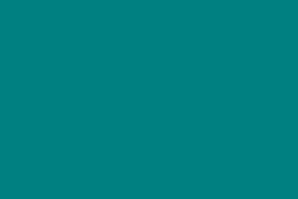
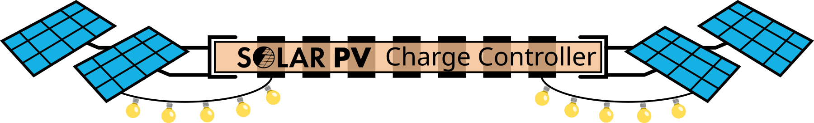
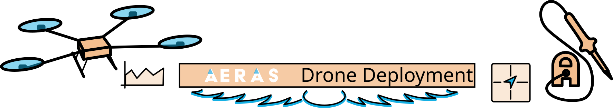
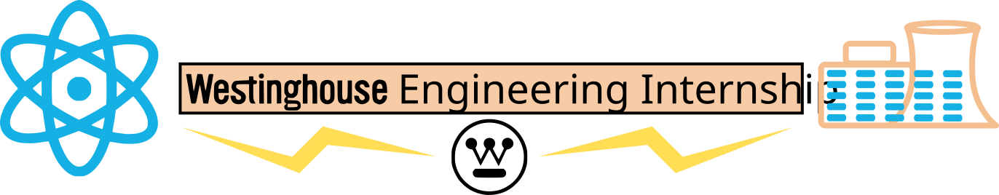

Personal project designing and implementing the circuity, firmware, control interface, plumbing, and grow towers for an open-source aeroponic farming system. Able to grow 200 heads of lettuce per month in a 2'x2' space at ~$500 cost per tower. Designed custom PCBs (solenoid drivers, control modules) in KiCAD. 3D printed housing boxes. Recorded data using Node-RED and MQTT running on a Google Cloud VM.



2 year team project designing a sub-$100 solar charge controller for installation on homes in rural Senegal. I developed all the firmware including sensor drivers, battery management code, control/safety logic, web UI, and MQTT data reporting. In Summer 2026, I travelled with my team to Senegal and installed 3 systems. We then improved our design and shipped 10 more systems. Currently, we are working towards a polished open-source version.

High school apprenticeship gaining hands-on electrical engineering experience building, repairing, and troubleshooting commerical powerwashing and photogrammetry drones. I disassembled and repaired the electronic speed controllers in several DJI dones, built a drone from scratch using Cube Orange flight controller, and calibrated PIDs and navigation systems using Ardupilot and Mission Planner. Gained a lot of experience soldering/desoldering, debugging circuits, and working with embedded systems.


